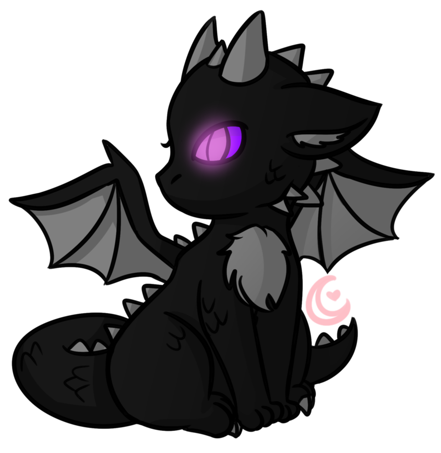

竜の血により 再び蘇らん 古の盟約に従い 四龍集結せん時王守護する 剣と楯が目覚め ついに赤き龍 暁より還り給う
在北欧神话中法夫纳是矮人王雷因和越古怪的Hreidmar和弟弟的儿子。 雷因杀死他的父亲拿到金牌，但后者决定我想他的一切成为龙（贪婪的象征）。
希腊神话，是一个百头龙（每个人的讲不同的语言）镇守苹果园花园，所以它也被称为苹果园龙。他是根据版本的和刻托或堤丰和针鼹的儿子。他被送往
根据已经代表了龙的形象不同文化起 着重要的作用，成为神和监护人，或怪物和强大的敌人。他们都归于素质和能力，如被附身的大智慧和知识，或贪婪和贪婪的大罪，导致拖垮整个人群叠加巨大的宝藏。因此，图像和龙图发生了变化，在许多不同的方式被解释...
动漫是日本大扩张的一种手段，既是一个商业和文化娱乐，这已经引起了群众的文化现象和科技艺术形式的产物
血龙将再次复活。根据旧约，剑和盾牌，将保护国王将唤醒......而在黎明再次红龙。
大自然在地球上的奇迹
Shenlong
El dragón (del latín draco, y este del griego δράκων , drákon, 'serpiente') es un ser mitológico que aparece de diversas formas en varias culturas de todo el mundo, con diferentes simbolismos asociados. Hay dos tradiciones principales sobre dragones: los dragones europeos,
Yamata no Orochi
Dragon en la mitología japonesa, es un terrible monstruo de ocho cabezas y ocho colas que fue asesinado por Susanoo, quien tras esto encontró la sagrada espada Kusanagi en su cuarta cola.
Quetzalcóatl
Es uno de los dioses de la cultura mesoamericana. Es considerado como el dios principal del panteón prehispánico. Quetzalcoatl 'serpiente preciosa’ significa precioso debido al plumaje reluciente del dragón, recordemos que las plumas eran utilizadas por los pueblos americanos a manera de joyas...
哈隆恩的意思是“降龙”在越南
Ha Long
Ha Long significa "dragón descendiente" en vietnamita. Se debe a la leyenda que esconde esta bahía. Una de las más famosas es la del dragón que dibujó el paisaje con su cola. Cuando el pueblo vietnamita luchaba contra los invasores chinos, el emperador de Vietnam pidió ayuda a los dragones mágicos. El que vivía en las montañas descendió para sumergirse en el mar y agitó la cola.
ピカチュウ
It evolves from Pichu when leveled up with high friendship and evolves into Raichu when exposed to a Thunder Stone. However, the starter Pikachu in Pokémon Yellow will refuse to evolve into Raichu unless it is traded and evolved on another save file.

1600 Pennsylvania Ave NW, Washington, DC 20500, United States of American. Tel:(202)456-1111 www.WorldofDragones.es